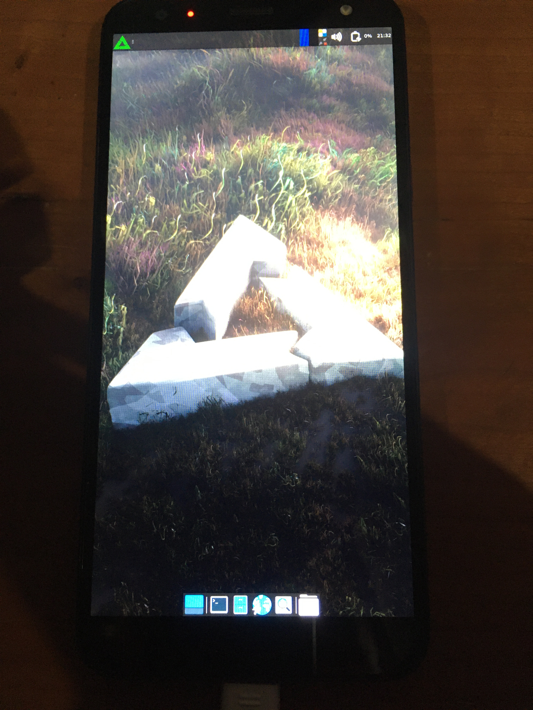

LG K40 (lg-mmh4x)
|

LG K40 running postmarketOS with Xfce4 |
|
| Manufacturer | LG |
|---|---|
| Name | K40 |
| Codename | lg-mmh4x |
| Released | 2019 |
| Category | testing |
| Original software | Android 8.1 |
| postmarketOS kernel | 4.9.190 |
| Hardware | |
| Chipset | MediaTek MT6765 |
| CPU | Octa-core 2 GHz Cortex-A53 |
| GPU | PowerVR Rogue GE8320 |
| Display | 720x1440 IPS |
| Storage | 16 or 32 GB |
| Memory | 2 GB |
| Architecture | armv7 |
| Unixbench Whet/Dhry score | 3140.0 |
{kind=link}
| USB Networking |
Works
|
|---|---|
| Flashing |
Partial
|
| Touchscreen |
Works
|
| Display |
Works
|
| WiFi |
|
| FDE |
Broken
|
| Mainline |
Broken
|
| Battery |
Broken
|
| 3D Acceleration |
Broken
|
| Audio |
|
| Bluetooth |
Broken
|
| Camera |
Broken
|
| GPS |
|
| Mobile data |
|
| SMS |
|
| Calls |
|
| USB OTG |
Works
|
| NFC |
|
| Accelerometer |
|
|---|---|
| Magnetometer |
|
| Ambient Light |
|
| Proximity |
|
| Hall Effect |
Unavailable
|
| Barometer |
|
| Power Sensor |
|
| Keyboard |
Unavailable
|
|---|---|
| Touchpad |
Unavailable
|
| USB-A |
Unavailable
|
| HDMI/DP |
Unavailable
|
| Ir TX |
Unavailable
|
| TrustZone |
|
| FOSS bootloader |
Broken
|
Contributors
- BenTheTechGuy
Users owning this device
- BenTheTechGuy ( Notes: Improving port)
How to enter flash mode
The LG K40 doesn't have a useful recovery mode (it's just a factory reset button), and fastboot doesn't exist at all on the device; the only possible mode is Download Mode, but that requires a signed image to flash.
Luckily, there's a tool called mtkclient that makes use of vulnerabilities in the MediaTek SoC itself, and that can be used to unlock the bootloader and flash images. It's also packaged as mtkclient on some distributions (Alpine, AUR, soon Debian/Ubuntu).
In the below examples, the command
mtk
is used, but if you installed from source, you'll need to run
python mtk
inside the repo.
To enter into a mode that mtkclient can be used in, follow these steps:
- Power off the device.
-
Run an mtkclient command, like
mtk printgpt. - While mtkclient waits for the device, hold Volume Up and plug it into the computer.
- mtkclient should output a lot of text at this point. The button can be released.
- As long as mtkclient did its job properly, the command will succeed. Now, other commands can be run with mtkclient.
Unlocking the bootloader
- Enable developer options, and OEM Unlocking from there.
- Follow the steps in #How to enter flash mode .
-
Erase metadata, userdata, and md_udc:
mtk e metadata,userdata,md_udc
Note: If metadata or md_udc don't exist, just remove them from the command. -
Unlock the bootloader:
mtk da seccfg unlock -
Reset mtkclient:
mtk reset - The bootloader should now be unlocked. From here, the device can be unplugged and powered on to go through setup.
Installation
Since recovery or fastboot can't be used, the kernel and rootfs must be flashed manually with mtkclient. First, find out which slot is active, A or B. Normally this would be done with fastboot, but that cannot be accessed, so adb must be used.
adb shell getprop ro.boot.slot_suffix # will return either _a or _b, current active slot pmbootstrap init # DRM is not supported yet, so Xfce4 is the best graphical option for now pmbootstrap install # can also install to an SD card and skip flashing to userdata later pmbootstrap export # symlink kernel and rootfs to /tmp for easy manual flashing mtk w boot_a /tmp/postmarketOS-export/boot.img # flash kernel to boot_a or boot_b depending on active slot mtk w userdata /tmp/postmarketOS-export/lg-mmh4x.img # flash rootfs to userdata partition mtk reset # unplug the device, turn it back on, and enjoy postmarketOS :)
See also
- pmaports!3231 Initial merge request
- Device package
- Kernel package